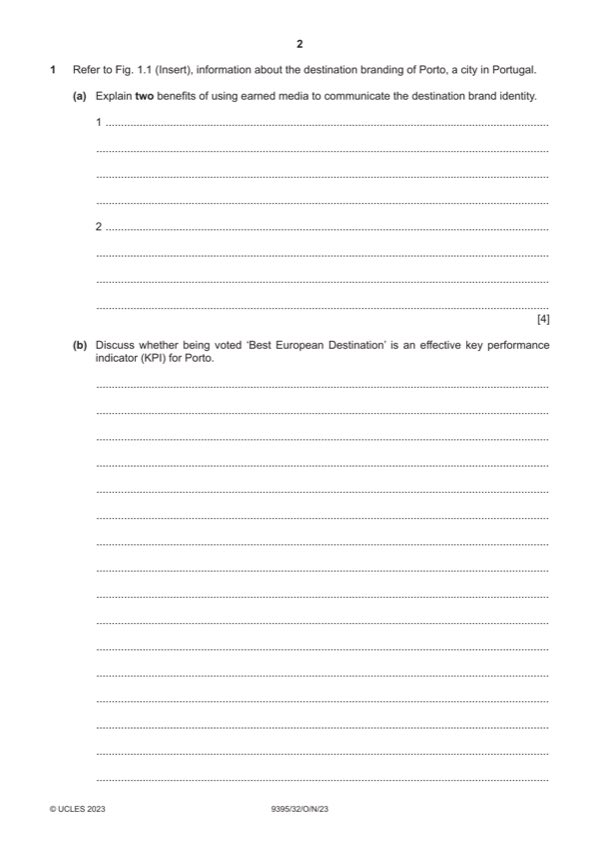

Question 1

Original paper page 2
Part 1(a) — solution
- Is created by external agencies i.e., a third party e.g., bloggers (1) so is less likely to be viewed as biased/trusted more
- Has better reach than paid for media (1) viral spread through word of mouth enhances the visibility of the destination
- High shareability (1) journalist content, Google reviews etc, so gains credibility quickly/seen as more authentic (1)
- Can be recurring/consistent message (1) so several influencers may all post content at a similar time to increase
- Cost-effective (1) you do not pay for it as others spread your good reputation for free (1)
Mark points
- Is created by external agencies i.e., a third party e.g., bloggers (1) so is less likely to be viewed as biased/trusted more
- Has better reach than paid for media (1) viral spread through word of mouth enhances the visibility of the destination
- High shareability (1) journalist content, Google reviews etc, so gains credibility quickly/seen as more authentic (1)
- Can be recurring/consistent message (1) so several influencers may all post content at a similar time to increase
- Cost-effective (1) you do not pay for it as others spread your good reputation for free (1)
Part 1(b) — solution
- Shows popularity – winning this accolade 3 times shows consistency over a six-year period for Porto and allows the
- Shows advantage in a competitive market – Porto will stand out amongst other similar destinations as their awards will
- Acts as a form of positive feedback – this is advantageous for the tourism authorities in Porto as it means they may not
- Implies that marketing efforts are working and that the brand is meeting visitor needs – the award gives them this
- Acts as a form of marketing in itself – potential visitors see the award and want to experience for themselves. The
Mark points
- Shows popularity – winning this accolade 3 times shows consistency over a six-year period for Porto and allows the
- Shows advantage in a competitive market – Porto will stand out amongst other similar destinations as their awards will
- Acts as a form of positive feedback – this is advantageous for the tourism authorities in Porto as it means they may not
- Implies that marketing efforts are working and that the brand is meeting visitor needs – the award gives them this
- Acts as a form of marketing in itself – potential visitors see the award and want to experience for themselves. The
Part 1(b) — solution
Level 2 (4–6 marks)
Candidates provide an explanation whether being voted ‘Best European Destination’ is an effective key performance
Indicator (KPI) for Porto, including reference to other KPIs. Candidates will show an understanding of the question and
include identification and explanation of one, two or more ways in which this is reliable or not. The answer is relevant and
shows reasonable knowledge and understanding of specific marketing concepts and principles, with some use of
appropriate terminology and may make some reference to the Porto, brand.
Level 1 (1–3 marks)
Candidates identify/describe up to three benefits of being voted ‘Best European Destination’ is an effective key
performance Indicator (KPI) for Porto. Do not credit a list of other KPIs. The answer shows limited knowledge and
understanding of specific marketing concepts and principles with limited use of appropriate terminology.
Level 0 (0 marks)
No content worthy of credit
2023 Page 10 of 15
9395/32 Cambridge International AS & A Level – Mark Scheme October/November 2023
Mark points
- Include the ideas shown in the solution above.
Part 1(c) — solution
- Tourism products and services are intangible – cannot be experienced or touched before purchase
- Using destination marketing and branding can heighten potential visitors’ awareness of the destination, and sets their
- Putting logos and images on everything increases the chances that tourists become familiar with the brand logo; using
- Virtual tours allow the customer to experience aspects of the destination and its main attractions before visiting
- Familiarisation trips allows tourism professionals to develop specific product knowledge of a destination which they can
- However, intangibility is a real issue and no amount of marketing will make the destination become real until it is
Mark points
- Tourism products and services are intangible – cannot be experienced or touched before purchase
- Using destination marketing and branding can heighten potential visitors’ awareness of the destination, and sets their
- Putting logos and images on everything increases the chances that tourists become familiar with the brand logo; using
- Virtual tours allow the customer to experience aspects of the destination and its main attractions before visiting
- Familiarisation trips allows tourism professionals to develop specific product knowledge of a destination which they can
- However, intangibility is a real issue and no amount of marketing will make the destination become real until it is
Part 1(c) — solution
Level 2 (5–8 marks)
Candidates provide an explanation/analysis of whether marketing can overcome the issue of intangibility. Candidates will
show an understanding of the question and include identification and explanation of one, two or more ways marketing can
overcome the issue. The answer is relevant and shows reasonable knowledge and understanding of specific marketing
concepts and principles, with some use of appropriate terminology.
Level 1 (1–4 marks)
Candidates identify/describe up to three benefits of destination marketing. The answer shows limited knowledge and
understanding of specific marketing concepts and principles with limited use of appropriate terminology.
Level 0 (0 marks)
No content worthy of credit.
Mark points
- Include the ideas shown in the solution above.